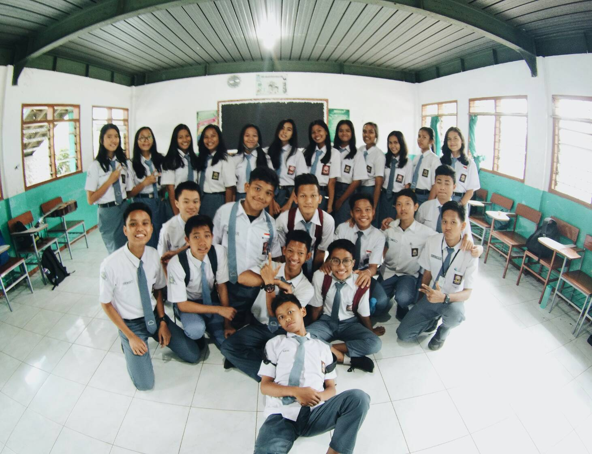
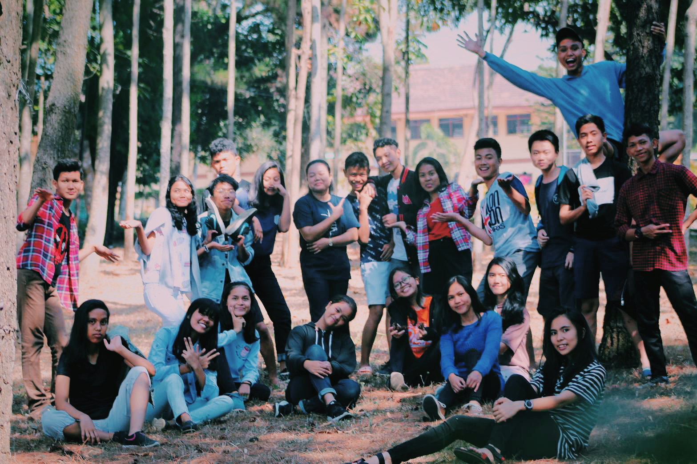
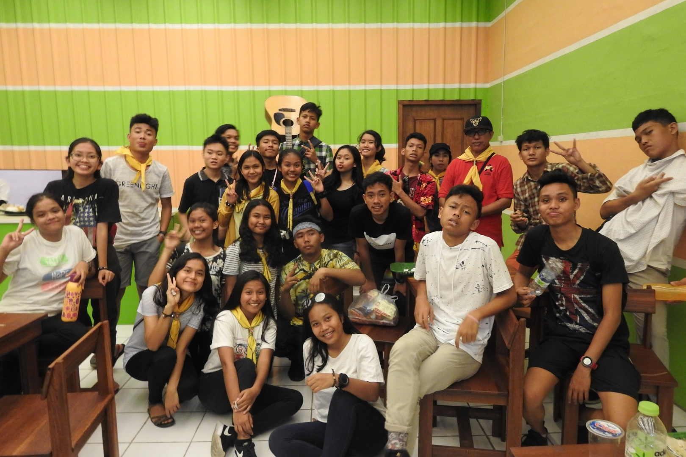
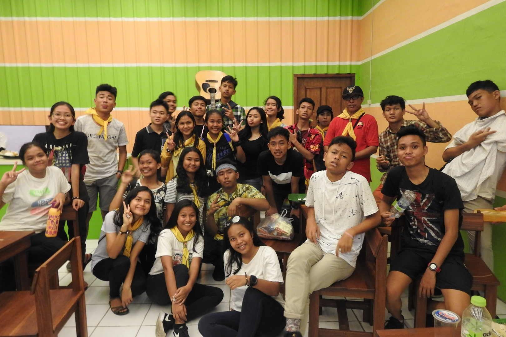
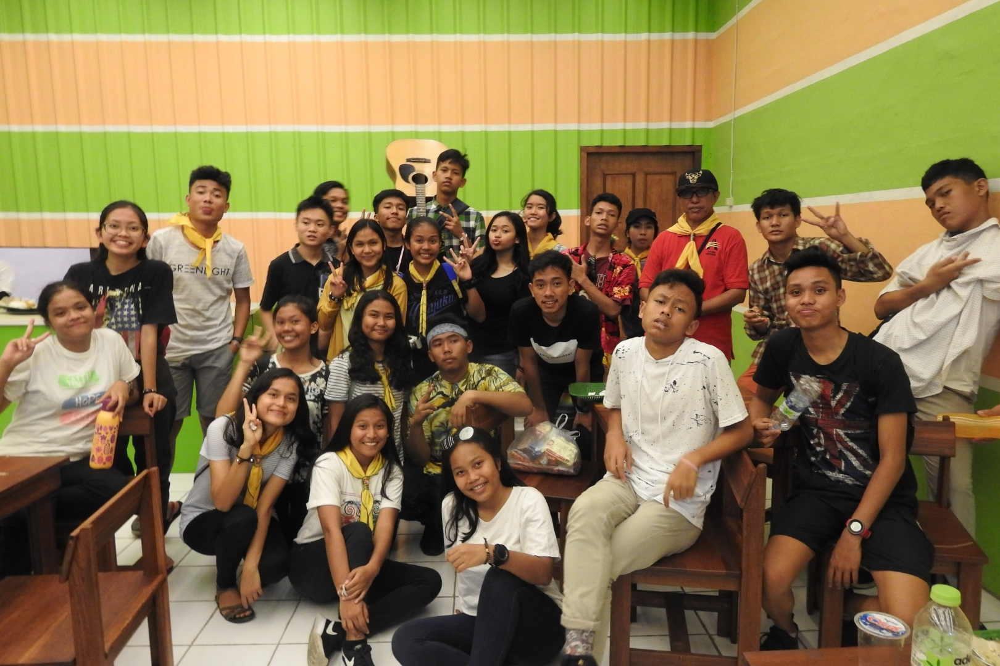

Biodata

Nama : Richant Febriel
Nama panggilan : Rican
Tanggal lahir : 11 February 2002
NIM : 2081023
Kewarganegaraan : Indonesia
Jenis Kelamin : Laki-laki
Golongan Darah : AB
Status : Mahasiswa
Jurusan : Teknik Infomatika
Email : febrielrichant@gmail.com
Motto Hidup : -


Menjalani pendidikan SMA di SLAPUR, mulai dari kelas 10 sampai kelas 12. Tentunya banyak kenangan yang tak akan pernah terlupakan saat masa di SMA, tapi sayangnya berpisah dengan COVID, membuat semua siswa wajib kembali ke rumah nya masing masing dan tidak diperbolehkan untuk tinggal di asrama


 



